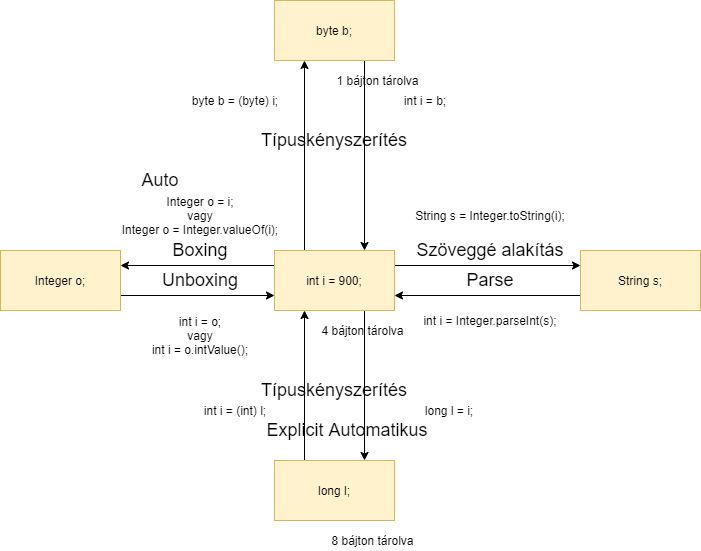

class: inverse, center, middle # Konverziók --- # Különböző konverziók * Típuskényszerítés * Boxing és unboxing * parse/format --- # Típuskényszerítés * Ha eltér a primitív típusú változók (literálok) típusa: típuskényszerítés (cast) * Pl. `byte` és `int` között * Két fajtája: automatikus (nagyobb ábrázolási tartomány felé), explicit (kisebb ábrázolási tartomány felé) * Típuskényszerítés operátorral (kerek zárójelek között) --- # Boxing és unboxing * Primitív típus és hozzá tartozó burkoló osztály között: boxing * Primitívből osztályba: boxing, fordítva: unboxing * Metódushívással * Nem is szükséges metódushívás: autoboxing és autounboxing --- # Parse és format * Szöveg és primitív típus között * Szövegből primitív típus: parse * Primitívből szöveggé: szöveggé alakítás --- # Típuskényszerítés * Explicit típuskényszerítés kell, mert kisebb ábrázolási tartományba konvertálunk, adat veszhet el ```java int i = 900; byte b = (byte) i; ``` * Automatikus a nagyobb ábrázolási tartomány felé ```java int i = 900; long l = i; l = (long) i; // Itt explicit típuskényszerítés nem szükséges és nem is javasolt long m = 900; // A 900 literál alapból int ``` --- # Boxing * Boxing ```java int i = 900; Integer o = Integer.valueOf(i); ``` * Autoboxing ```java Integer o = 900; int i = 900; Integer p = i; ``` --- # Unboxing * Unboxing ```java Integer o = 900; int i = o.intValue(); ``` * Autounboxing ```java Integer o = 900; int j = o; // Auto ``` --- # Szöveg és primitív típus közötti konverzió ```java int i = 900; String s = "" + i; // Nem javasolt String t = Integer.toString(i); ``` Parse: ```java String s = "900"; int i = Integer.parseInt(s); ``` --- # Konverziók összefoglalása 